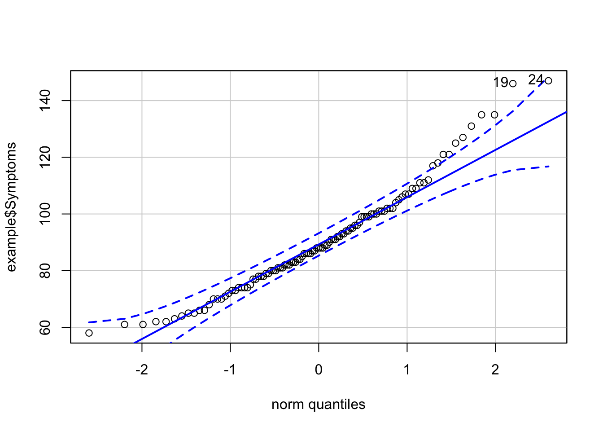

Week 6 Correlation and Regression
In this week’s class we covered correlation and regression. In what follows we will revisit the ideas from this week’s lecture making explicit callbacks to topics from slides and using an example from the text. The examples from this page involve R. For a tutorial on how to perform similar analyses in SPSS, please check the appropriate video on the course Box Drive. Please note that this vignette assumes that you have the following packages installed and loaded in R:
pacman::p_load(car, # new qqPlot function
cowplot, # apa plotting
tidyverse, # tidyverse goodness
psych,
lm.beta # getting standard coefficient
) 6.1 The Relationship b/tw Stress and Health
From Howell (Section 9.2): Wagner, Compas, and Howell (1988) investigated the relationship between stress and mental health in first-year college students. Using a scale they developed to measure the frequency, perceived importance, and desirability of recent life events, they created a measure of negative events weighted by the reported frequency and the respondent’s subjective estimate of the impact of each event. This served as their measure of the subject’s perceived social and environmental stress. They also asked students to complete the Hopkins Symptom Checklist, assessing the presence or absence of 57 psychological symptoms.
This data (and most data mentioned in the text) can be accessed directly from Howell’s companion website.
# Data from Table 9.2 Howell
example <- read_table("https://www.uvm.edu/~dhowell/methods8/DataFiles/Tab9-2.dat")## Parsed with column specification:
## cols(
## ID = col_integer(),
## Stress = col_integer(),
## Symptoms = col_integer(),
## lnSymptoms = col_double()
## )psych::describe(example)## vars n mean sd median trimmed mad min max range
## ID 1 107 54.00 31.03 54.00 54.00 40.03 1.00 107.00 106.00
## Stress 2 107 21.29 12.49 20.00 20.49 11.86 1.00 58.00 57.00
## Symptoms 3 107 90.33 18.81 88.00 88.87 17.79 58.00 147.00 89.00
## lnSymptoms 4 107 4.48 0.20 4.48 4.48 0.19 4.06 4.99 0.93
## skew kurtosis se
## ID 0.00 -1.23 3.00
## Stress 0.62 -0.19 1.21
## Symptoms 0.74 0.45 1.82
## lnSymptoms 0.21 -0.28 0.026.1.1 Testing our assumptions
Here we are interested in the relationship between perceived Stress (as measured on a scale factors the number and impact of negative life events) and the presence of psychological Symptoms. As with any other parametric analysis, we first need to see if our data adheres to the assumptions of normality and homogeniety of varience. We can use the tools we’ve been employing for the last few weeks test these assumptions:
First Stress:
hist(example$Stress, breaks = 10)car::qqPlot(example$Stress)## [1] 72 55shapiro.test(example$Stress) # see Field (2014), Sec 5.6.1##
## Shapiro-Wilk normality test
##
## data: example$Stress
## W = 0.96009, p-value = 0.002709Eyeballing the plots, our Stress measures look slightly skewed, but not egregiously so. This is confirmed by our obtained skew and kurtosis values. The final function shapiro.test() performs a Shapiro-Wilkes test (\(W\)) of normality by comparing our observed distribution against a theoretical normal. Here the null hypothesis is that the \(observed == theoretical\), where \(p < .05\) indicates that the observed distribution is not normal. Our obtained p-value confirms suggests the possibility that Stress measures deviate from normal. However, as noted in the Field text (5.6.1) we need to be careful using the Shapiro-Wilkes test on large samples. Ultimately you need to make a judgment on whether or not all of the evidence available leads you to the conclusion of non-normality. In this case I would trust the normality of this data due to what I see in the Q-Q plot (very few large deviations from the normal line).
Now Symptoms
hist(example$Symptoms, breaks = 10)psych::describe(example$Symptoms)## vars n mean sd median trimmed mad min max range skew kurtosis
## X1 1 107 90.33 18.81 88 88.87 17.79 58 147 89 0.74 0.45
## se
## X1 1.82car::qqPlot(example$Symptoms)
## [1] 24 19shapiro.test(example$Symptoms) # see Field (2014), Sec 5.6.1##
## Shapiro-Wilk normality test
##
## data: example$Symptoms
## W = 0.95918, p-value = 0.00232Symptoms does not pass either the eyeball or the Shapiro-Wilkes tests. These data are positively skewed. One way of dealing with non-normal data is by performing a logarithmic transformation (see Field, 5.8). This has already been performed for this data, lnSymptoms is a natural logarithmic transform of Symptoms. With your own data, this can be accomplished quite simply in R by using the log():
Question 1. Perform a natural log transform of Symptoms and save it to a new column in your data frame TransformedData. Assess TransformedData using a qqPlot:
example$TransformedData <- log(example$Symptoms)car::qqPlot(example$TransformedData)## [1] 24 196.2 Plotting the data
One of the first things that you should do is plot your data. Plotting gives you a sense of what is going on with your data. In fact, YOU SHOULD NEVER TAKE A TEST RESULT AT FACE VALUE WITHOUT FIRST LOOKING AT YOUR DATA!! Beware of Anscombe’s quartet!
Let’s plot using ggplot:
Question 2: create a ggplot scatterplot
p <- ggplot(example, aes(x = example$Stress, y = example$lnSymptoms)) + geom_point() +
theme_cowplot() + xlab("Stress") + ylab("lnSymptoms")
show(p)6.3 Covariance and Correlation
Both the Howell and Field texts offer excellent overviews of covariance and correlation so I won’t go into too much depth here. Briefly, let’s make a few connections to ideas that we’ve already encountered.
6.3.1 Covariance
Recall that variance may be calculated as: \(s_{x}^{2}=\frac{\sum \left ( x_{i}-\bar{X} \right )^{2}}{n-1}\)
Where the numerator is the sum of squared differences from each score to the sample mean, and the denominator is our degrees of freedom.
Variance tells us to what degree scores in a particular sample variable deviate from its mean. With this in mind, covarience is a statement about the degree to which two sampled variables deviate from their respective means. Consider we have sampled two measures, X & Y from a population. When addressing the degree to which X and Y co-vary, we are asking the question: “To what degree and in what direction does Y move away from its mean as X moves from its mean?”
As such, the formula for covariance is simply an extension of the formula for variance that we already know: \[s_{xy}=\frac{\sum \left ( x_{i}-\bar{X} \right )\left ( y_{i}-\bar{Y} \right )}{n-1}\]
So, in order to calculate the covariance we need the calculate the sum of the cross-product of the sum of squared differences of our two variables (X = Stress; Y = lnSymptoms) and divide that number by of degrees of freedom. We could go about the business of calculating this “by hand”:
# N = number of rows in data frame
N <- nrow(example)
# mean Stress:
meanX <- mean(example$Stress)
# and same for lnSymptoms:
meanY <- mean(example$lnSymptoms)
# plug these values into our equation:
# sum of cross product
numerator <- sum((example$Stress - meanX) * (example$lnSymptoms - meanY))
# degrees of freedom
denominator <- (N - 1)
# covariance:
covXY <- (numerator/denominator) %>% print()## [1] 1.336434The covariance of Stress and lnSymptoms is 1.336.
Question 3: Alternatively, covariance may be calculated quickly in R using the cov() function:
cov(example$Stress, example$lnSymptoms)## [1] 1.3364346.3.2 Correlation
It may be tempting to calculate our covariance and stop there, but covariance is a limited measure. What I mean by this is that covarience indexes the degree of relationship between two specific variables, but doesn’t allow for more general comparison across situations. For a quick example, lets multiply both Stress and lnSymptoms by two. In R, (assuming all columns are numerics) we can accomplish this by multiplying the entire data frame by 2:
example.by2 <- example * 2
head(example.by2)## ID Stress Symptoms lnSymptoms TransformedData
## 1 2 60 198 9.190240 9.190240
## 2 4 54 188 9.086590 9.086590
## 3 6 18 160 8.764054 8.764053
## 4 8 40 140 8.496990 8.496990
## 5 10 6 200 9.210340 9.210340
## 6 12 30 218 9.382696 9.382696We would like to think that multiplying every value by a constant should have no effect on our general interpretation of the relationships in our data as the overall relationship in our data remain the same. To help make this apparent, let’s imagine that I weigh 200 lbs (yea… imagine) and my wife weighs 100 lbs. So I weigh twice as much as my wife. Over the next year we both go on a binge fest and both double our respective weights—I’m now 400 lbs and my wife is 200 lbs. I still weigh twice as much as my wife. Coincidentally the fact that relationships remain unchanged in spite of these sorts of mathematical transformations is why we could perform the natural logarithmic transform earlier and not feel too guilty.
Well what happens when I get the covariance of my example.by2 data?:
cov(example.by2$Stress, example.by2$lnSymptoms)## [1] 5.345735The covariance changes!! This is a problem, and is why, in order to usefully convey this data we report the correlation. The correlation is a standardized covariance.
The unit of measurement we’ll use for standardization is the standard deviation. We can standardize the covariance in one of two ways:
1. Standardize our variables (into z-scores) and then calculate the covariance: \[r_{xy}=\frac{\sum z_{x}z_{y}}{n-1}\]
zX <- scale(example$Stress)
zY <- scale(example$lnSymptoms)
corXY <- (sum(zX * zY)/(N - 1)) %>% print()## [1] 0.5286565or
2. Calculate the covariance and standardize it (by dividing by the product of the standard deviation): \[r_{xy}=\frac{\sum \left ( x_{i}-\bar{X} \right )\left ( y_{i}-\bar{Y} \right )}{(n-1)s_{x}s_{y}}\]
# get SD of X and Y:
sdX <- sd(example$Stress)
sdY <- sd(example$lnSymptoms)
# using the covXY calculated above:
covXY/(sdX * sdY)## [1] 0.5286565Again, in R we don’t need to do this by hand, there are in fact several functions. A more comprehensive look can be found in Field 6.5.3. The simplest function is cor(), with outputs the correlation as a single value. However, I prefer to use cor.test() as it tends to provide the most immediately useful data. You can input your data into this function in two ways:
cor.test(example$Stress, example$lnSymptoms)or
cor.test(~Stress + lnSymptoms, data = example)##
## Pearson's product-moment correlation
##
## data: Stress and lnSymptoms
## t = 6.3818, df = 105, p-value = 4.827e-09
## alternative hypothesis: true correlation is not equal to 0
## 95 percent confidence interval:
## 0.3765970 0.6529758
## sample estimates:
## cor
## 0.5286565I prefer the latter as it uses formula notation which is the sort of notation we will use for regression and later t.tests, and ANOVA. Finally, if you don’t want all the additional gobble-dee-gook from cor.test you can simply attach $estimate to the end of either the function or object like so:
cor.test(~Stress + lnSymptoms, data = example)$estimate## cor
## 0.5286565How did I know that I could do this you ask? To get a quick list of things that you can pull from the attributes, try the attributes() function.
Question 4 save the cor.test() output of the correlation between Stress and lnSymptoms as an object corOut. Submit corOut to the attributes() function. Grab the p.value and estimate:
corOut <- cor.test(~Stress + lnSymptoms, data = example)
attributes(corOut)## $names
## [1] "statistic" "parameter" "p.value" "estimate" "null.value"
## [6] "alternative" "method" "data.name" "conf.int"
##
## $class
## [1] "htest"corOut$p.value## [1] 4.827486e-09corOut$estimate## cor
## 0.5286565Our correlation is expressed in terms of the Pearson’s product-moment correlation coefficient (or \(r\), for short). Here \(r\) = .529.
Coincidentally, returning to our problematic transformed data example.by2, we find that the obtained \(r\) is identical:
cor.test(~Stress + lnSymptoms, data = example.by2)##
## Pearson's product-moment correlation
##
## data: Stress and lnSymptoms
## t = 6.3818, df = 105, p-value = 4.827e-09
## alternative hypothesis: true correlation is not equal to 0
## 95 percent confidence interval:
## 0.3765970 0.6529758
## sample estimates:
## cor
## 0.5286565Note that when our sample size is small we may need to adjust \(r\). This is because the sampling distribution of \(r\) is not normally distributed.
The formula for this adjustment is: \(r_{adj}=\sqrt{1-\frac{\sum \left (1-r^2 \right )\left ( n-1 \right )}{n-2}}\)
For now, we can calculate this by hand, but later we will see that it will be provided by another function (or at least its squared value will).
# Pearson's r:
rXY <- cor.test(~Stress + lnSymptoms, data = example)$estimate
# adjusted r:
rXYadj <- sqrt(1 - ((1 - rXY^2) * (N - 1)/(N - 2))) %>% print()## cor
## 0.5221266.4 Sigfnificance testing \(r\)
It may be useful to perform tests of significance on \(r\). Typically, there are two types of tests that we perform:
- a test of the observed \(r\) to \(r=0\), and
- a test of the difference between two \(r\) values.
Regarding the first case, the test that the observed correlation is different from 0, Howell correctly notes the following (Section 9.11): - “a test on b is equivalent to a test on r in the one-predictor case we are discussing in this chapter. If it is true that \(X\) and \(Y\) are related, then it must also be true that \(Y\) varies with \(X\)—that is, that the slope is nonzero. This suggests that a test on \(b\) (beta coefficient) will produce the same answer as a test on \(r\), and we could dispense with a test for \(b\) altogether.”
The reverse is also true. In the single predictor case, if one has a test of \(b\) this obviates the need to run an independent test of \(r\). As you will see below, we indeed do have a simple test that gives us the significance of the beta coefficient, \(b\).
In the second case, the difference between \(r\) values, we may invoke the paired.r() function from the psych package. Using the \(r\) values from the example in Section 9.11 of the Howell text, “Testing the Difference Between Two Independent \(r\)s”:
psych::paired.r(xy = 0.5, xz = 0.4, n = 53, n2 = 53, twotailed = T)## Call: psych::paired.r(xy = 0.5, xz = 0.4, n = 53, n2 = 53, twotailed = T)
## [1] "test of difference between two independent correlations"
## z = 0.63 With probability = 0.53where:
xy: the correlation in the first data setxz: the correlation in the second data setn: the number of samples in the first data setn2: the number of samples in the second data set -twotailed: run a two-tailed test,TRUEorFALSE
This output tells us the resulting Fisher \(z\) score and corresponding probability.
Question 5: For example assume that you sample 35 men and find a correlation of .42 between Symptoms and Stress. In another sample of 42 women you find a correlation of .51. Perform a test to see if those two correlations are different from one another.
psych::paired.r(xy = 0.42, xz = 0.51, n = 35, n2 = 42, twotailed = T)## Call: psych::paired.r(xy = 0.42, xz = 0.51, n = 35, n2 = 42, twotailed = T)
## [1] "test of difference between two independent correlations"
## z = 0.48 With probability = 0.636.5 Fitting the data to a model
As social scientists, we are not only concerned with observation, but also with explanation. Measures of correlation provide us with the former; we use regression methods to build models in service of the latter. Again both the Field and Howell texts provide excellent overviews of regression, so I won’t repeat much of what they say here.
For the purposes of this vignette (and course) we will limit ourselves to linear regression, that is describing a line that best fits our data. By “fit” we mean a line than when compared to our observed data minimizes our squared residuals.
To perform a linear regression we may call upon the lm() function. This function uses formula notation outcome variable ~ predictor variable(s). A simple regression has a single predictor. More often in our analyses we are concerned with the relative effects of multiple predictors, but this is multiple regression and saved for the Spring course. Here, we may be interested in the degree to which perceived Stress contributes to the number of lnSymptons, or using formula terminology: “How do lnSymptoms (outcome) vary as a function of Stress (predictor)”. This is represented in R as example$lnSymptoms~example$Stress
6.6 Linear models in R
Our model assigned to example.model:
example.model <- lm(example$lnSymptoms ~ example$Stress)
print(example.model)##
## Call:
## lm(formula = example$lnSymptoms ~ example$Stress)
##
## Coefficients:
## (Intercept) example$Stress
## 4.300537 0.008565While this output only gives us our coefficients (intercept and slope of our line), our object example.model has the class lm. This simply means that R understands that this object is storing a linear model. Hiding behind this spartan output is a multitude of info that may be accessed via its attributes or it may be thrown into other functions for additional info and analysis.
6.6.1 Attributes of class lm:
As I mentioned above, lm objects contain various attributes that may be accessed using the names convention, $nameOfAttribute.
For example, returning to the example.model object we created above, we may get a glimpse of its attributes by:
attributes(example.model)## $names
## [1] "coefficients" "residuals" "effects" "rank"
## [5] "fitted.values" "assign" "qr" "df.residual"
## [9] "xlevels" "call" "terms" "model"
##
## $class
## [1] "lm"This command tells us the names of several attributes (values) that are stored in example.model. Typically we are interested in the $coefficients, fitted.values (aka predicted values), and $residuals. Recall that in our model fitted.values are the predicted values of lnSymptoms for each value of Stress, that is those values that fall along the line of best fit. residuals are the difference between our observed values of lnSymptoms and those predicted by the model. Mathematically example.model$residuals is equivalent to:
example$lnSymptoms - example.model$fitted.values6.6.2 Testing the residuals
An important assumption test for our model is that the residuals are normally distributed. In fact some argue that this is more important than than having normal distributions in the raw data itself. Quickly, we can test this using the regular methods:
hist(example.model$residuals, breaks = 10)
car::qqPlot(example.model$residuals) %>% show()
psych::describe(example.model$residuals)Question 6: Run a Shapiro-Wilkes test on our example.model residuals. How do we feel about the residuals here?
shapiro.test(example.model$residuals)##
## Shapiro-Wilk normality test
##
## data: example.model$residuals
## W = 0.9876, p-value = 0.4296.6.3 Using your lm object with other functions
As I mentioned above you may also use lm objects with other functions. For example, for our model example.model:
plot(example.model)produces a host of successive plots, including a plot of “Residuals v. Fitted”, A Q-Q plot that includes possible outliers, and a leverage plot. The last is outside of the scope of this course, but may be useful for you to remember in the Spring!
A useful call for our present purposes is:
summary(example.model)##
## Call:
## lm(formula = example$lnSymptoms ~ example$Stress)
##
## Residuals:
## Min 1Q Median 3Q Max
## -0.42889 -0.13568 0.00478 0.09672 0.40726
##
## Coefficients:
## Estimate Std. Error t value Pr(>|t|)
## (Intercept) 4.300537 0.033088 129.974 < 2e-16 ***
## example$Stress 0.008565 0.001342 6.382 4.83e-09 ***
## ---
## Signif. codes: 0 '***' 0.001 '**' 0.01 '*' 0.05 '.' 0.1 ' ' 1
##
## Residual standard error: 0.1726 on 105 degrees of freedom
## Multiple R-squared: 0.2795, Adjusted R-squared: 0.2726
## F-statistic: 40.73 on 1 and 105 DF, p-value: 4.827e-09which provides us with info about the coefficients, their standard error, t-scores, and corresponding p-values (Pr>|t|). It also provides us with our \(r^2\) and adjusted \(r_{adj}^2\) (which corresponds to our \(r\) and \(r_{adj}\) from above).
Coincidentally we can also call the individual attributes of this summary as well:
summary(example.model) %>% attributes()## $names
## [1] "call" "terms" "residuals" "coefficients"
## [5] "aliased" "sigma" "df" "r.squared"
## [9] "adj.r.squared" "fstatistic" "cov.unscaled"
##
## $class
## [1] "summary.lm"summary(example.model)$coefficients## Estimate Std. Error t value Pr(>|t|)
## (Intercept) 4.300536618 0.033087547 129.974478 8.085268e-118
## example$Stress 0.008564802 0.001342063 6.381819 4.827486e-09We’ll return to each of these later, but first let’s return to our plot:
6.6.4 Plotting the regression line
It’s useful practice to plot the regression line. In fact, I would typically recommend doing this at the outset of the analysis (way back at the beginning) but we had a few things to cover make this step clear. To add a simple regression line to our previous plot we can use the geom_smooth() function. geom_smooth() takes the following arguements:
-method: what kind of regression line do you want to create? in this case we are performing a linear regression, so lm.
-mapping: is you did not specify your aes() in the original call you need to specify them here (whats on the x-axis, y-axis, etc).
-level: create a ribbon specifying a confidence interval of each predicted value (here I’m using 95% CI).
-color: what color do you want the line.
-linetype: solid line? dotted line? dashed line? default is solid.
# creating a new plot with our original scatter plot as a template:
p <- ggplot2::ggplot(example, aes(x = example$Stress, y = example$lnSymptoms)) +
geom_point() + theme_cowplot() + xlab("Stress") + ylab("lnSymptoms")
smooth_p <- p + geom_smooth(mapping = aes(x = Stress, y = lnSymptoms), method = lm,
level = 0.95, color = "black")
show(smooth_p)The shaded ribbon around the line of regression represents the 95% CI of the estimate at each value of the predictor. The size of the CI may be adjusted by using the level parameter in geom_smooth().
Comparing this plot to our example.model output:
summary(example.model)##
## Call:
## lm(formula = example$lnSymptoms ~ example$Stress)
##
## Residuals:
## Min 1Q Median 3Q Max
## -0.42889 -0.13568 0.00478 0.09672 0.40726
##
## Coefficients:
## Estimate Std. Error t value Pr(>|t|)
## (Intercept) 4.300537 0.033088 129.974 < 2e-16 ***
## example$Stress 0.008565 0.001342 6.382 4.83e-09 ***
## ---
## Signif. codes: 0 '***' 0.001 '**' 0.01 '*' 0.05 '.' 0.1 ' ' 1
##
## Residual standard error: 0.1726 on 105 degrees of freedom
## Multiple R-squared: 0.2795, Adjusted R-squared: 0.2726
## F-statistic: 40.73 on 1 and 105 DF, p-value: 4.827e-09From this plot it becomes apparent that the model coefficients obtained above represent the values of the slope and intercept of the regression line.
The beta coefficient conveys the slope of the line—unit change in outcome per unit change in predictor. Typically this is expressed as b in text or B in SPSS. In
Routput, the beta estimate is tied to the name of the corresponding predictor variable. In our case that’sexample$Stress.The intercept tells us what the value of the outcome would be if the predictor was 0. In most instances the intercept is not terribly useful. For example if you were looking at the relationship between height and weight it would make no sense to concern yourself with instances where height is absolutely 0. Obviously, a caveat here is if the value 0 is meaningful for your analysis. For example perhaps you are looking at depression as a function of alcohol consumption and want to explicitly say something about people that have never had a single drink in their life.
One way of making a meaningless intercept meaningful is by centering your data (subtracting every value of your predictor from a constant). For example, if you center around the mean, the intercept will tell you the predicted value of the outcome variable at the mean value of the predictor.
Just for giggles, lets plot our mean-centered data. We mean center Stress by subtracting each value of Stress from its mean:
ggplot2::ggplot(data = example) + # plot each data point as a small red open circle
geom_point(aes(x = (Stress - mean(Stress)), y = lnSymptoms), color = "black", size = 2,
shape = 19) + geom_smooth(aes(x = (Stress - mean(Stress)), y = lnSymptoms), method = lm,
level = 0.95, color = "black") + theme_cowplot() + xlab("Stress") + ylab("lnSymptoms")as you can see slope doesn’t change, but the values become centered around the intercept.
6.6.5 A note on degrees of freedom of our model
The general equation for calculating the requisite degrees of freedom of a model is \(n-k\) where \(n\) is the number of observations (or later conditions) and \(k\) is the number of parameters that are required to be known for the calculation.
Recall how we calculate variance / standard deviation. We take the sum of the squared deviations from the mean \(\sum(X-\bar{X})\) and divide by \((n-1)\). Remember that we are subtracting that 1 because in order to calculate the variance we must keep one thing constant, the mean. In this case the mean is our parameter that must be known in order to calculate the variance.
We can now ask the question “what must be known in order to derive the line of best fit?”, or more simply what must one know in order to create a particular line. We must know both the line’s slope and its intercept. Knowing slope alone leads to the indeterminism presented in Fig A (identical slopes, infinitely-many intercepts), intercept alone leads to indeterminism presented in Fig B (identical intercept, infinitely-many slopes). We need both to define a particular line. Just like the mean above, these are the two parameters that must be locked-in to derive our model.
A simple way of restating this is that your model degrees of freedom are the: \[number \space of \space observations - number \space of \space predictors\]
where at least one of your predictors is used as a constant (the intercept) and the remainder provide your \(\beta\) coefficients.
For simple regression we have 1 predictor and 1 constant so our degrees of freedom are \(n-k\); where \(k=2\). However, in your future there be be dragons… models that may have multiple predictors and multiple intercepts (multiple regression, mixed effects / multi-level models, etc).
6.6.6 Interpreting the output
With our plot in hand, we can return to our summary(example.model) output:
- Call: tells us the formula we originally input for this model
- Residuals: descriptive stats of the residuals
Coefficients: provides the estimated values, standard error of the estimates, and NHST of the intercept and beta coefficient. In both cases the null hypothesis is Estimate = 0. Again for the intercept this may or may not be useful. For example you might use it to test whether people who haven’t had a single drink of alcohol have no depression at all. The test of
betatests against the null hypothesis of zero correlation (relationship). All tests are conducted provided the t-value on \(n-k\) degrees of freedom (see next bullet point)Residual standard error: This is calculated by first getting the sum of the squared residuals and dividing that number by the degrees of freedom of the model. In this case the df equals the number of total observations (107) minus the number of parameters (\(k\)) that were calculated by the model in order to generate the predicted values (2). This may be interpreted as a measure of goodness of fit of the model, and perhaps more importantly its predictive value (see Howell 9.7).
Multiple R-squared and Adjusted R-squared: The coefficient of determination calculated from \(r\) or \(r_{adj}\). \(r^2\) tells us the degree to which our model accounts for observed variance in the observed outcomes. On was to think about this is, to what degree does variation in our predictor explain the observed variation in our outcomes. More on this below.
Finally, this output gives is the resulting \(F\)-ratio and corresponding \(df\) for an \(F\)-test. This is a significance test for our \(r^2\). Does our model explain a significant amount of the variance?
6.6.7 The coeff. of determination as index of explanatory value
Here we may turn to a (a little bit longer than expected) digression involving J.S. Mill and exact and inexact sciences. One philosophical conceit is that we can never really empirically observe causes, but only effects. That is, I can never truly observe that one billiard ball caused another to move, I can only say with a high degree of certainty that I observed the first billiard ball striking the second and subsequently the second moved at a particular velocity. In order to deal with this epistemological crisis (how can you really ever know anything!!!) we build explanatory models. The degree to which our model is able to account for the range of our previous observations tells us how useful our model parameters (predictors) are in explaining a phenomenon in question.
For example, to explain what I observe about the contact and subsequent motion of billiard balls I might build a model that takes into account the mass and velocity (speed and direction) of the first ball, the mass and velocity of the second ball and the point and angle of contact. Presuming I use these as predictors, I can account with varying degrees of success the heading and direction of the balls, or the outcome. In fact, in this example, I’m likely to be very successful in describing most, but not all observed outcomes. That is, there are some variations in the outcomes that just using these parameters does not result in a successful account. I can refine my billiard contact model to include things like the friction caused from the felt, the force of gravity, the angle of the table top, etc., and it’s likely the case that with each new predictor my model becomes better. However at some point I begin to reach diminishing returns (see over-fitting next semester).
This is why physics appears to be an exact science (well, mechanical physics at least). They’ve had centuries to develop and refine their models about the mechanical workings of our very local corner of the universe to the point that these models are able to account for a very high degree of variation in observed phenomena. These models typically have a very high \(r^2\) and as such tend to have high predictive value. Which is why with some understanding of gravitational force, mass, and a few simple calculations, high school students all over country are able to do this in their physics lab.
Indeed within some disciplines having an \(r^2\) < .9 means you model isn’t good enough. Typically this is the case when the phenomenon under observation is not complex (hope that doesn’t offend). As you move away from physics and chemistry (or at least the low complexity phenomena under each discipline), the explanatory value of models tends to decrease. Us folks in the social sciences, we are moving into inexact-science-land. Weather patterns, economies, ecosystems, and human behaviors are highly complex; in many cases in inordinate number of contributing factors may be present in an observed outcome. As a result degree of variation that these models may account for is typically diminished, especially in the social sciences. For example depending on the phenomena and sub-discipline, an \(r^2\) of .3 might mean you’re cooking with gas! In fact, for some phenomena, a reported \(r^2\) that is too high might be a cause for suspicion (“they weren’t so much cooking with gas so much as they were cooking the books”).
As a final note, its typically poor practice to get a significant \(r^2\) and just stop there. Remember, this is just a claim that your model accounts for significantly more variation than 0%. If you were to have a model that accounted for 6% (\(r^2 = .06\)) of the variance but was significant (\(p<.05\)), you need to ask yourself whether that model is useful at all. It certainly has very little predictive value (I wouldn’t bet my life… or even a few bills on it predicting a future outcome), and its true explanatory value is quite questionable.

6.7 Write up and presentaion
Our obtained results can be reported in several different ways. However, typically it’s best practice to report both the \(beta\) coefficient with corresponding \(t-test\); as well as the general statistics about the model including the \(r^2\) and corresponding \(F-test\). Prior to any reporting of the stats, you also need to articulate the structure of the model.
I think a good template to start from is:
“[Clearly restate the alternative hypothesis identifying operationalized variables]. To test this hypothesis the data were [what type of analysis?] with [what is your dv] as the outcome and [what is your predictor] as our predictor. The resulting model was significant, r^2=XXX; F(df1,df2)=F-ratio, p=p-value and revealed a significant relationship between the [covariables], b=XX; t(df)=XX, p=XX$.”
For example, with this data you may report it as:
“We hypothesized that increases in self-reported measures of Stress would correspond to increases in the number of self-reported symptoms. Given that our Symptoms data showed a significant violation of the normality assumption, we transformed these scores using a log-transformation (lnSymptoms). To test this hypothesis the data were submitted to a simple linear regression with lnSymptoms as the outcome and Stress as our predictor. The resulting model was significant, \(r^2\)=.28; \(F\)(1,105)=40.73, p<.001$, and revealed a significant positive relationship between the Stress and Symptoms, \(b\)=.008; \(t\)(105)=6.38, \(p\)<.001.”
That said, in many circles it’s typical practice to report the standardized \(beta\) coefficients (\(\beta\)). These are the \(beta\) coefficients we would have obtained if we had initially converted both our Stress and lnSymptom values to \(z\)-scores. We can retroactively obtain these coefficients by using the lm.beta() function from the lm.beta package (duplicate names, confusing I know). We can then input an lm class objects into the lm.beta() function and get the summary of those results. The new column Standardized is reported rather than Estimate:
Question 7 Use lm.beta::lm.beta() to obtain the standard coefficients. How would you report these results?
lm.beta::lm.beta(example.model) %>% summary()So amending the example reporting paragrah above:
The resulting model was significant, \(r^2\)=.28; \(F\)(1,105)=40.73, \(p\)<.001, and revealed a significant positive relationship between the Stress and Symptoms, \(\beta =.528\); \(t(105)=6.38\), \(p<.001\)."
Coincidentally you may have noticed that this value is the correlation that we established earlier. Again I point to Howell 9.11 for how these two are similar in the single predictor case.
6.8 Advanced plotting
Depending on what info you are trying to convey, there are several ways of dressing up your plot. In this section we’ll cover three things that you can do with the plots above: - adding text information like \(r^2\) and the equation of the regression line - placing two (or more) plots side-by-side - placing two sample (and regression lines) on the same plot
6.8.1 Adding text to the plot
Text may be added to a plot using the annotate() function in ggplot2. This function has several arguments: the type of annotation (typically geom="text"), the x position of the plot (measured in units of the x axis), the y position of the plot, the label or text that you want to add (in string form) and the whether or not R needs to parse the text. For simple text like “Hi my name is..” doesn’t need parsing. For more complex text like some of what we will be doing (text that needs to be italicized, superscripts, etc) you need to set parse=TRUE. Finally you can adjust the size of the text.
We can create the necessary text for out plot by hand by simply adding these repective values in format that we construct. However, there are a few leaps and bounds that we need to do in order to format the text and plug in our values. For the same of simplicity just take this at face value for now, but feel free to follow-up in your free time to see exactly what is going on here:
# putting together my equation, telling R to add superscripts and italics:
equation <- italic(y) == 4.301 + 0.009 %.% italic(x) * "," ~ ~italic(r)^2 ~ "=" ~
0.28
# turn it into an expression for R to parse:
equation <- as.expression(equation) %>% as.character()and now add it to my previous plot using annotate()
# create scatter plot
p <- ggplot2::ggplot(data = example) + # plot each data point as a small red open circle
geom_point(aes(x = Stress, y = lnSymptoms), colour = "black", size = 2, shape = 19) +
theme_cowplot()
# adding the regression line
p <- p + geom_smooth(aes(x = Stress, y = lnSymptoms), colour = "black", method = lm,
level = 0.95)
# adding text
p <- p + annotate(geom = "text", x = 20, y = 5, label = equation, parse = T, size = 4)
show(p)You’ll note that my text is centered at the intesection of where x=20 and y=5. You may need to play around with these values to get this right.
6.8.2 addnig text like a R-ninja:
The other useful thing to remember is that you can access different parts of an lm class object using its attributes (see above). In this case we can call on various attributes of example.model. For example we can get the coefficients by:
example.model$coefficients## (Intercept) example$Stress
## 4.300536618 0.008564802we call also get them by using the coef() function:
coef(example.model)## (Intercept) example$Stress
## 4.300536618 0.008564802the same can be said about the \(r^2\). It’s available from the summary model attributes:
# list our attributes:
summary(example.model) %>% attributes()## $names
## [1] "call" "terms" "residuals" "coefficients"
## [5] "aliased" "sigma" "df" "r.squared"
## [9] "adj.r.squared" "fstatistic" "cov.unscaled"
##
## $class
## [1] "summary.lm"# we want 'r.squared':
summary(example.model)$r.squared## [1] 0.2794776knowing this we can actually create a function to do the above for us automatically (see I told you building you own functions would com in handy). True, there are a few things that we haven’t covered yet in the code, so feel free to look them up:
# create a function called lm_eqn
lm_eqn = function(m) {
l <- list(a = format(coef(m)[1], digits = 2) %>% unname(), b = format(abs(coef(m)[2]),
digits = 2) %>% unname(), r2 = format(summary(m)$r.squared, digits = 3))
if (coef(m)[2] >= 0) {
eq <- substitute(italic(y) == a + b %.% italic(x) * "," ~ ~italic(r)^2 ~
"=" ~ r2, l)
} else {
eq <- substitute(italic(y) == a - b %.% italic(x) * "," ~ ~italic(r)^2 ~
"=" ~ r2, l)
}
as.character(as.expression(eq))
}after running the chunk above (or executing the function in to memory) you can just plug in you lm object into the new function lm_eqn():
# plug in the lm.model
equation <- lm_eqn(example.model)
# create scatter plot
p <- ggplot2::ggplot(data = example) + # plot each data point as a small red open circle
geom_point(aes(x = Stress, y = lnSymptoms), colour = "black", size = 2, shape = 19) +
theme_cowplot()
# adding the regression line
p <- p + geom_smooth(aes(x = Stress, y = lnSymptoms), colour = "black", method = lm,
level = 0.95)
# adding text from 'equation' object above
p <- p + annotate(geom = "text", x = 20, y = 5, label = equation, parse = T, size = 4)
show(p)6.8.3 Placing plots side-by-side in a grid
You can place two or more plots in a grid using the plot_grid() function from the cowplot library. You can check out an intro to cowplot here. Indeed, cowplot does so much more than grid plotting! cowplot can be installed from CRAN, so we can simply:
pacman::p_load(cowplot)The plot.grid() function has several arguments. For now, we’ll just focus on a few, including the list of plots to include, labels for each plot, and their arrangement specified in the number of rows and columns. For the purpose of this example and the next, let’s create a new data set that takes a look at the data above as broken down by men and women:
# read in the data above:
example2 <- read_table("https://www.uvm.edu/~dhowell/methods8/DataFiles/Tab9-2.dat")## Parsed with column specification:
## cols(
## ID = col_integer(),
## Stress = col_integer(),
## Symptoms = col_integer(),
## lnSymptoms = col_double()
## )# create a gender vector of 57 women and 50 men:
gender <- c(rep("w", 57), rep("m", 50))
# randomize gender using sample
set.seed(1) # just so we randomize the same
gender <- sample(gender)
# add gender to our example 2 data.frame
example2$gender <- gender
show(example2)## # A tibble: 107 x 5
## ID Stress Symptoms lnSymptoms gender
## <int> <int> <int> <dbl> <chr>
## 1 1 30 99 4.60 w
## 2 2 27 94 4.54 w
## 3 3 9 80 4.38 m
## 4 4 20 70 4.25 m
## 5 5 3 100 4.61 w
## 6 6 15 109 4.69 m
## 7 7 5 62 4.13 m
## 8 8 10 81 4.39 m
## 9 9 23 74 4.30 m
## 10 10 34 121 4.80 w
## # ... with 97 more rowsNow that we have our data set we can separate out women’s data from men’s data. We’ve done this before using the filter function in dplyr. Another way is to use the subset() function:
womenData <- subset(example2, gender == "w")
menData <- subset(example2, gender == "m")now we can create two separate plots…
# women plot
wPlot <- ggplot2::ggplot(data = womenData, aes(x = Stress, y = lnSymptoms)) + # plot each data point as a small red open circle
geom_point(colour = "red", size = 2, shape = 1) + geom_smooth(method = lm, level = 0.95) +
theme_cowplot()
# men plot
mPlot <- ggplot2::ggplot(data = menData, aes(x = Stress, y = lnSymptoms)) + # plot each data point as a small red open circle
geom_point(colour = "red", size = 2, shape = 1) + geom_smooth(method = lm, level = 0.95) +
theme_cowplot()And plot them side-by-side. To do so, in the cowplot::plot_grid() function I need to enter the name of each plot; the corresponding labels that I choose, and tell plot_grid how many columns there should be in my grid:
plot_grid(wPlot, mPlot, labels = c("A", "B"), ncol = 2)Note here I’ve labeled the women’s plot “A” and men’s plot “B”. I can label these whatever my hear desires, though typical convention is lettering. I can also stack them vertically by specifying nrow instead of ncol:
plot_grid(wPlot, mPlot, labels = c("W", "M"), nrow = 2)6.8.4 Two series on the same damn plot
on the same damn plot, on the same damn plot…
For our last trick, let’s plot both men and women’s data on the same figure. This can be accomplished by using our original example2 data frame and using aes() to specify different shape, colors, and regression lines as a function of gender:
# add color and shape arguments here. These arguements in aes() indicate that
# different shapes and colors should be used for each level of gender:
bothPlot <- ggplot2::ggplot(data = example2, aes(x = Stress, y = lnSymptoms, shape = gender,
color = gender)) + # only need to specify size here:
geom_point(size = 2) + geom_smooth(method = lm, level = 0.95)
show(bothPlot)Of course to make this APA I’ll need to add my cowplot() to the end. I’ll also need to perform a few manual tweaks of the color, scale_color_manual() takes a vector of color names.
bothPlot <- ggplot2::ggplot(data = example2, aes(x = Stress, y = lnSymptoms, shape = gender,
color = gender)) + # only need to specify size here:
geom_point(size = 2) + geom_smooth(method = lm, level = 0.95) + theme_cowplot() +
# colors, make one series black and the other grey greys have a numeric value 10,
# 20, 30 etc that determines how light:
scale_color_manual(values = c("black", "grey60"))
show(bothPlot)Note that I can also specify linetype aesthetic in geom_smooth() for different lines:
bothPlot <- ggplot2::ggplot(data = example2, aes(x = Stress, y = lnSymptoms, shape = gender,
color = gender)) + # only need to specify size here:
geom_point(size = 2) + geom_smooth(method = lm, level = 0.95, aes(linetype = gender)) +
theme_cowplot() +
# colors, make one series black and the other grey greys have a numeric value 10,
# 20, 30 etc that determines how light:
scale_color_manual(values = c("black", "grey60"))
show(bothPlot)